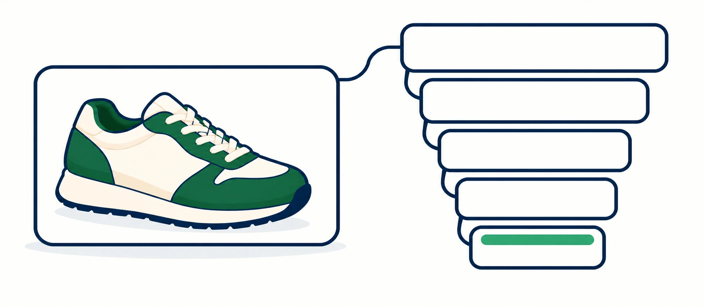
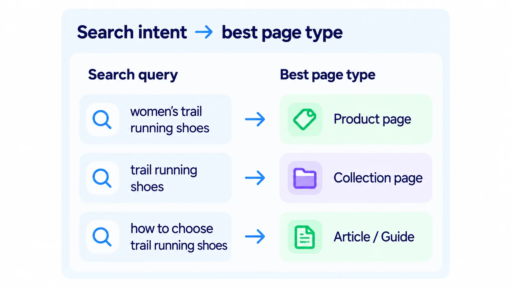
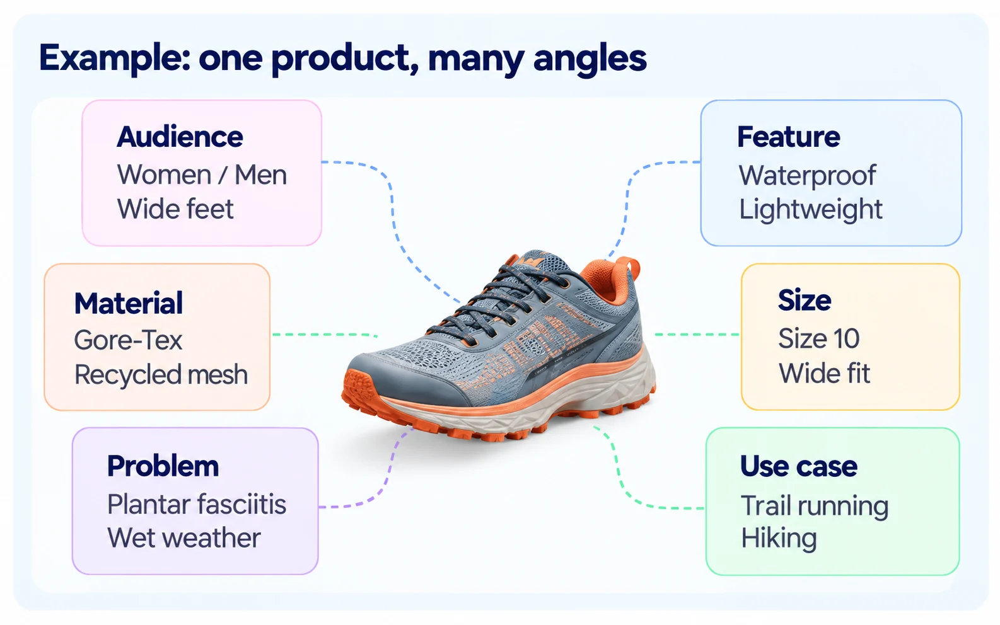
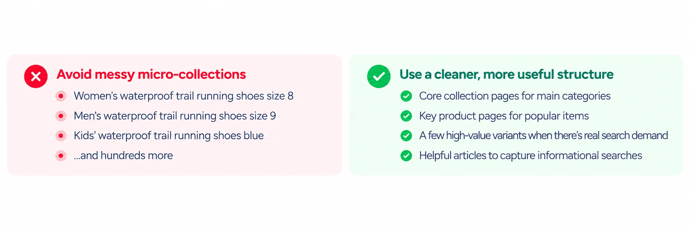

A small Shopify store probably does not need to rank for “running shoes.” It needs to understand the more specific searches that describe what its customers actually want.
Long-tail SEO is useful because specificity gives you information. The more clearly a search describes the product, audience, feature, or problem, the easier it becomes to decide which page should answer it.
1. Broad searches get attention. Specific searches give you information.
Every added detail narrows the audience, but it also tells you more about the shopper’s need. For a smaller store, that specificity can be an advantage.
| Search | What you actually know |
|---|---|
| shoes | Almost nothing |
| running shoes | Activity |
| women’s trail running shoes | Activity + audience + terrain |
| waterproof women’s trail running shoes | Adds an important feature |
| waterproof women’s trail running shoes for wide feet | Now the problem is much clearer |
2. “Long-tail” does not simply mean “long phrase.”
A five-word search can still be vague. The useful part is not the word count. It is how much meaningful intent the search reveals.
The second search tells you the product, material, use condition, and likely shopping intent. Think of a useful search phrase as a tiny product brief.
3. Build a specificity ladder.
Start with the broad product category, then add the kinds of details a real shopper might use to narrow the choice.

- ShoesBroad product category
- Running shoesAdds the activity
- Trail running shoesAdds the terrain
- Waterproof trail running shoesAdds a feature
- Waterproof trail running shoes for wide feetAdds a fit need
Each meaningful detail reveals more about the shopper’s need. Verify that your products actually meet those needs.
4. The keyword should point to a page opportunity.
The useful question is not “Where can I paste this phrase?” It is “What page would best satisfy the search behind it?”

| Search | Best potential destination |
|---|---|
| insulated water bottle | Collection page |
| 32 oz stainless steel water bottle | Product page or tightly matched collection |
| water bottles for hiking | Collection page |
| how to clean stainless steel water bottle | Article / guide |
| dishwasher safe insulated bottle | Product or collection, depending on assortment |
5. Small catalogs can have an advantage.
Large retailers have scale. Smaller specialist stores can have specificity. The details you know about a product can create more accurate ways to describe the need it serves.

Your catalog knowledge is not just operational data. It is raw material for discovery.
6. Look for patterns across the catalog, not random keyword ideas.
One specific phrase is interesting. A repeated customer need is a strategy.
If research repeatedly surfaces searches such as linen dresses for hot weather, linen shirts for hot weather, and linen pants for hot weather, the larger opportunity may be a “hot-weather linen” theme that can support collections, guides, internal links, product attributes, and future merchandising.
7. Do not create pages for every possible combination.
Long-tail research can reveal lots of combinations. That does not mean each one deserves its own collection or landing page.

A useful page usually needs enough relevant products, a distinct shopper need, useful context, and a reason to exist independently. Otherwise the detail may belong in filters, product attributes, tags, metafields, or copy.
8. Use the language naturally.
Once you identify a useful search theme, you still do not need to repeat the phrase everywhere. Use the language where it genuinely helps explain the page.
- Product title, when the detail is important and accurate.
- Product description, where more context is useful.
- Collection heading or introduction, when the collection serves that intent.
- Image alt text, only when the detail is relevant to the image.
- Internal link text, when it accurately describes the destination.
9. A simple long-tail workflow.
- Choose a product or category.
- Add meaningful attributes.
- Look for real customer combinations.
- Identify the intent.
- Choose the right page type.
- Improve the page so it actually answers the need.
- Connect related products, collections, and articles with useful internal links.
Where penstack fits in
Long-tail SEO gets harder when useful product information is scattered across descriptions, metafields, collections, image details, and team knowledge.
penstack brings product and collection context into the content workflow so those details can support clearer, more specific product content without turning SEO into a separate keyword-entry chore.
The goal is not to generate more keywords. It is to make the information you already have more useful and easier to understand.
The takeaway
Broad keywords describe markets. Long-tail searches describe needs. Smaller stores can compete by understanding those needs well enough to create the page that actually answers them.
Turn catalog knowledge into clearer product content.
Use product context, collection context, and Brand Voice together in penstack.